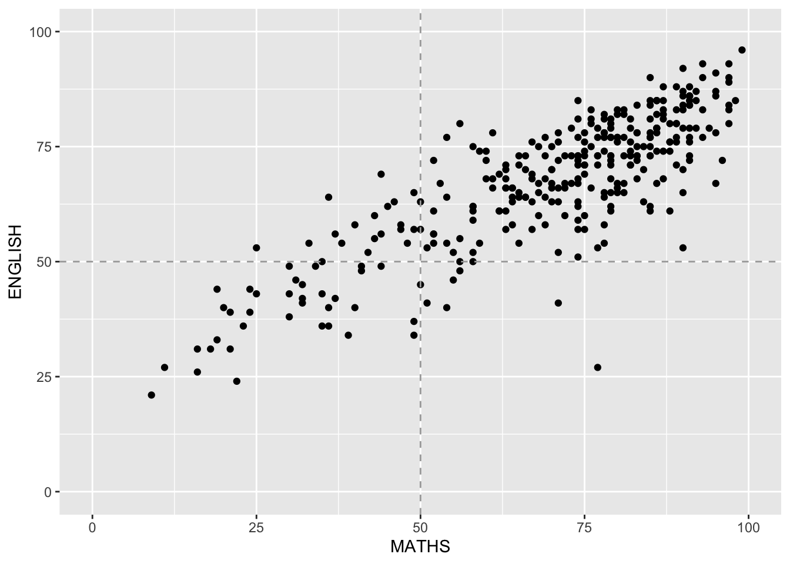

pacman:: p_load(tidyverse) In-class_Ex01
Getting started
- Using p_load() of pacman package to load tidyverse on
- Importing data
exam_data <- read_csv("data/Exam_data.csv")Rows: 322 Columns: 7
── Column specification ────────────────────────────────────────────────────────
Delimiter: ","
chr (4): ID, CLASS, GENDER, RACE
dbl (3): ENGLISH, MATHS, SCIENCE
ℹ Use `spec()` to retrieve the full column specification for this data.
ℹ Specify the column types or set `show_col_types = FALSE` to quiet this message.Plotting the graph
1) Horizontal Bar Graph
Changing the colors of plot panel background of theme_minimal() to light blue and the color of grid lines to white.
Output:
ggplot(data= exam_data,
aes(x = RACE)) +
geom_bar() +
coord_flip() +
theme_minimal() +
theme(panel.background = element_rect(fill = 'lightblue') ,
panel.grid.minor=element_line(colour="white"),
panel.grid.major=element_line(colour="white")) +
ggtitle("Horizontal Bar Chart: \nLight Blue theme and White grid lines ") +
theme(plot.title = element_text(hjust = 0.5))
2) Vertical Bar Graph
With reference to the critics on the earlier slide, create a makeover looks similar to the figure on the right.
Output 1:
ggplot(data= exam_data,
aes(x = fct_infreq(RACE))) +
geom_bar() +
xlab("Race") +
ylab("No.of\nPupils") +
ylim(0,220) +
geom_text(aes(label = paste(..count..,",", scales::percent(..count../sum(..count..),accuracy = 0.1))),
stat= "count", vjust = -0.5) +
ggtitle("Vertical Bar Chart: \nSorted Frequency + Labelling ") +
theme(plot.title = element_text(hjust = 0.5))Warning: The dot-dot notation (`..count..`) was deprecated in ggplot2 3.4.0.
ℹ Please use `after_stat(count)` instead.Output 2: Forcats Package.:
exam_data %>%
mutate(RACE = fct_infreq(RACE)) %>%
ggplot(aes(x = RACE)) +
geom_bar()+
ylim(0,220) +
geom_text(stat="count",
aes(label=paste0(..count.., ", ",
round(..count../sum(..count..)*100,
1), "%")),
vjust=-1) +
xlab("Race") +
ylab("No. of\nPupils") +
theme(axis.title.y=element_text(angle = 0))
3) Histogram
Adding mean and median lines on the histogram plot.
Change fill color and line color
Output:
ggplot(data= exam_data,
aes(x = MATHS)) +
geom_histogram(color="black",fill="light blue",bins = 30) +
geom_vline(aes(xintercept=mean(MATHS)),
color="red", linetype="dashed", size=1) +
geom_vline(aes(xintercept=median(MATHS)),
color="black", linetype="dashed", size=1) +
ggtitle("Histogram: \nAdd lines and color ") +
theme(plot.title = element_text(hjust = 0.5))Warning: Using `size` aesthetic for lines was deprecated in ggplot2 3.4.0.
ℹ Please use `linewidth` instead.3.1) By Gender
- The background histograms show the distribution of English scores for all pupils.
Output:
d <- exam_data
d_bg <- d[, -3]
ggplot(d, aes(x = ENGLISH)) +
geom_histogram (data= d_bg, bins=30, alpha = 0.2) +
geom_histogram (bins=30, color = 'black') +
facet_wrap(~ GENDER) +
theme_bw() d <- exam_data
d_bg <- d[, -3]
ggplot(d, aes(x = ENGLISH, fill = GENDER)) +
geom_histogram(data = d_bg, fill = "grey", alpha = .5) +
geom_histogram(colour = "black") +
facet_wrap(~ GENDER) +
theme_bw() `stat_bin()` using `bins = 30`. Pick better value with `binwidth`.
`stat_bin()` using `bins = 30`. Pick better value with `binwidth`.d <- exam_data
d_bg <- d[, -3]
ggplot(data = exam_data, aes(x = ENGLISH, fill= GENDER, )) +
geom_histogram(bins = 30) +
facet_wrap(~ GENDER) +
guides(fill = FALSE) Warning: The `<scale>` argument of `guides()` cannot be `FALSE`. Use "none" instead as
of ggplot2 3.3.4.4) Scatterplot
- The scatterplot show the relationship between English and Maths for all pupils.
Output:
ggplot(data = exam_data,
aes (x= MATHS, y= ENGLISH)) +
geom_point() +
geom_hline(yintercept=50, linetype="dashed", color = "darkgrey") +
geom_vline(xintercept=50, linetype="dashed", color = "darkgrey") +
coord_cartesian(xlim=c(0,100), ylim=c(0,100)) 